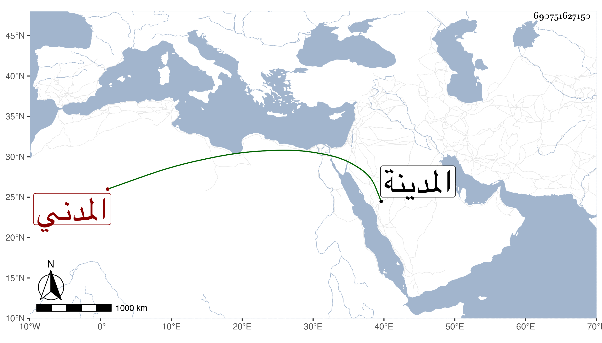

0902Sakhawi.DawLamic.ITO20230111-ara1.EIS1600.690751627150
Biography ID: 690751627150
414
أبو الفضل بن القاضي عبد الله بن عبد الرحمن بن صالح المدني ابن عم الشمس محمد بن فتح الدين محمد الماضي ممن حفظ القرآن وغيره واشتغل عند الشهاب البيجوري حين كان بالمدينة وتميز في الميقات بل بلغني أنه كان فاضلا وهو ممن سمع مني بالمدينة بل سمع على أبي الفتح المراغي وغيره . مات في سنة إحدى وتسعين .
